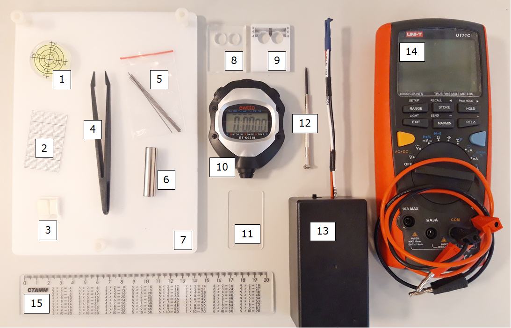
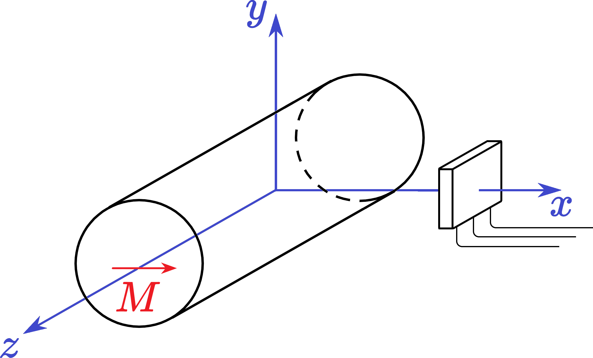
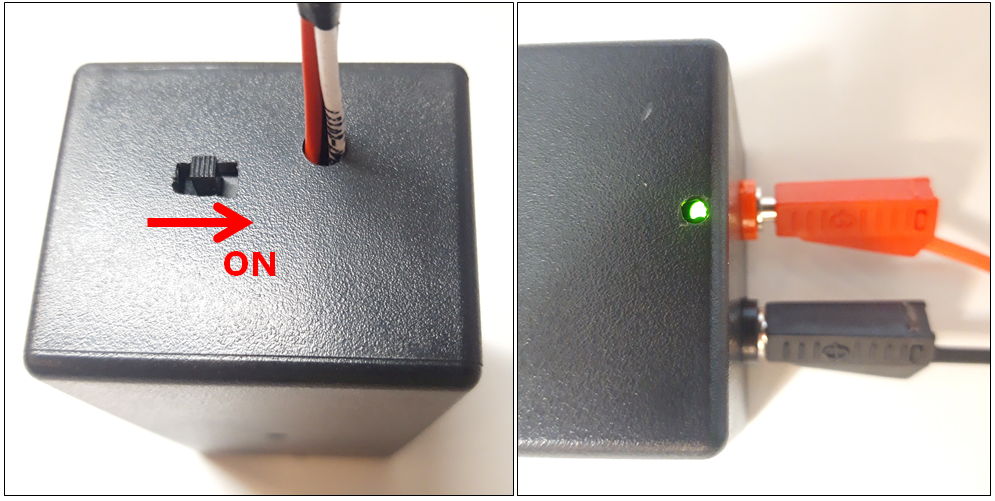
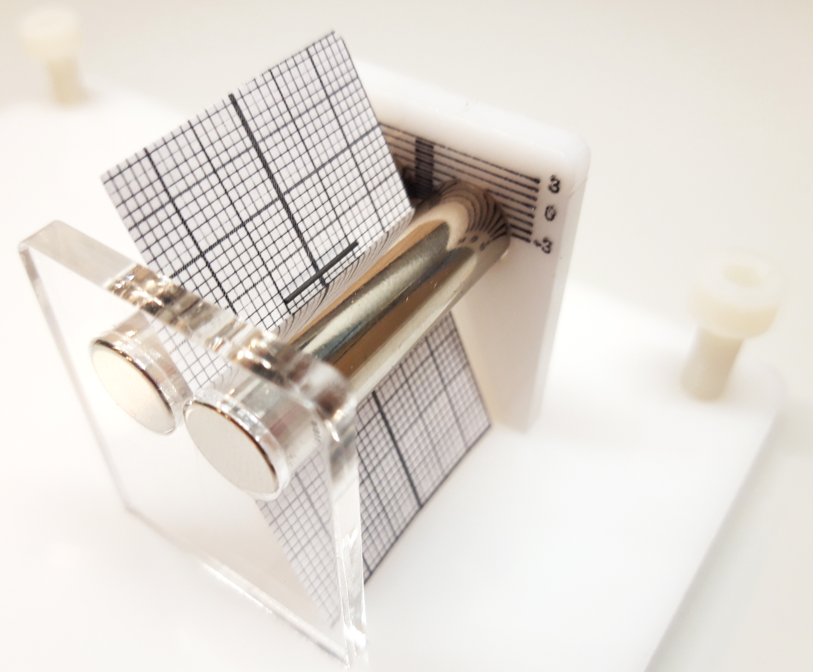
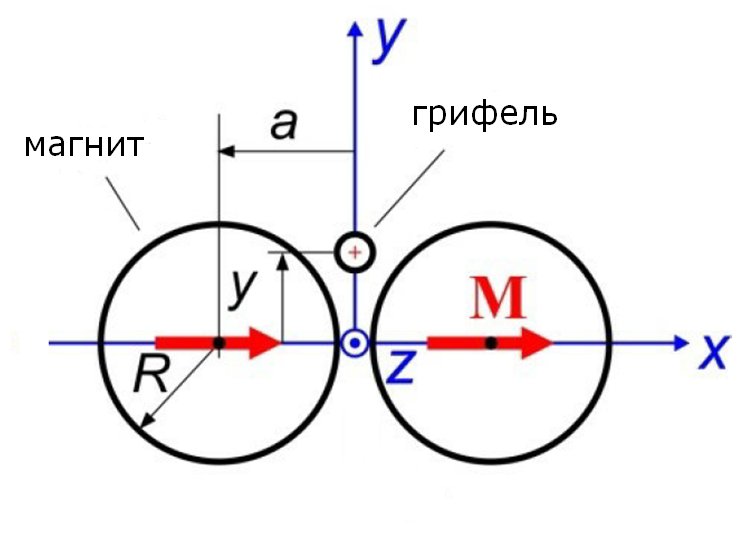
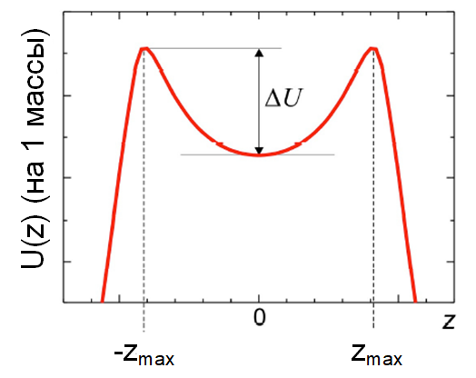

X23 (2023) — English translation
Magnetic traps are widely used in science to hold various objects and isolate them from external influences. This experiment is devoted to the study of one of the types of magnetic traps.

EQUIPMENT: Bubble level Fragment of graph paper Adhesive mass Plastic tweezers Set of graphite leads: $d\in\{0.3, 0.7, 0.9\}~\text{мм}$ - 1 pc., $d=0.5~\text{мм}$ - 3 pcs. Magnet with diametrical magnetization (another one will be provided upon request before completing part B) Adjustable table Magnet stand support Stand support for millimeter scale magnets Stopwatch Spacer (for easy assembly of magnets in the stand) Screwdriver Hall sensor with power supply Multimeter with connecting wires Ruler $20~\text{cm}$
KNOWN CONSTANTS: gravitational acceleration $g = 9.81~\text{м}/\text{с}^2$ magnetic constant $\mu_0 = 4\pi\cdot10^{-7}~\text{Гн} / \text{м}$ graphite density $\rho = 1690~\text{kg}/\text{м}^3$
KNOWN CONSTANTS:
Let's introduce notations for the installation parameters and stick to them throughout the entire work. Do not redesignate the quantities mentioned in the condition! NOTATION: $L=40~\text{мм}$ – length of each magnet, $R=5.0~\text{мм}$ – radius of each magnet, $a=5.75~\text{мм}$ – distance between the center of the magnet in the stand and the origin of coordinates (see part B), $d=2r \in \{0.3, 0.5, 0.7, 0.9\}~\text{мм}$ – diameters of the issued leads, $l$ – length of the lead, $m_0$ – mass of the lead of length $l$, $m$ is the magnetic moment of each magnet, $M$ is the magnetization of each magnet (magnetic moment per unit volume), $\chi$ is the magnetic susceptibility of graphite, $m_\text{гр}$ is the magnetic moment of the stylus placed in an external magnetic field, $M_\text{гр}$ is the magnetization of the stylus placed in an external magnetic field (magnetic moment units of volume).
Let's introduce notations for the installation parameters and stick to them throughout the entire work.
Do not redesignate the quantities mentioned in the condition!
INSTRUCTIONS: Calculation of errors is required only in paragraphs B1 and B6, where this is clearly written. The sensing element of the Hall sensor measures the magnetic field perpendicular to its surface. You can bend the wires leading from the sensing element to its power supply, but DO NOT BEND the SENSOR relative to the wires: its “legs” are extremely fragile. The neodymium magnets you were given are very strong, but fragile and expensive. BE EXTREMELY CAREFUL WITH MAGNETS! If a magnet breaks, a new one will not be issued, and most measurements will not be possible... The proximity of metal objects to magnets distorts their field. Select a part of the desk for measurements that is far from its metal fasteners, and move away any excess metal objects. Graphite leads are very fragile, be careful with them. Think about the sequence of measurements so that you have enough leads provided. NO NEW LEADERS WILL BE ISSUED.
Let us introduce a coordinate system with the origin at the center of the magnet and the axis $Ox$ directed along the magnetization vector $\vec M$. Vector $\vec M$ is the same at all points inside the magnet and is directed as in the figure.

INSTRUCTIONS FOR USING THE HALL SENSOR: Connect the Hall sensor power supply to the voltmeter using banana-to-banana wires. Turn on the voltmeter. Move the lever on the sensor power supply to the “ON” position (see figure on the left). Make sure that the green indicator light is visible through the hole in the housing (see figure on the right). You can insert a screwdriver into the same hole and adjust the trimming potentiometer so that in the absence of a magnetic field, the voltmeter shows $0~\text{В}$. The Hall sensor has a sensitivity of $k=31.25~В/Тл$. After completing the measurements, move the power supply switch to its previous position to turn off the power supply and prevent the built-in battery from discharging.
INSTRUCTIONS FOR USING THE HALL SENSOR:

In the limit $x \to \infty$ (i.e. in the “far field”) the magnetic field $B(x)$ coincides with the field of a point magnetic dipole, however, for small $x$ (in the “near field”) another dependence is valid, in which $n$ is an unknown positive number: \begin{cases} B(x) \propto 1/x^n, & x \sim 1 \text{cm} \quad \text{near field}\\ B(x) \propto 1/x^3, & x \to \infty \quad \text{far field} \end{cases}
Ask the person on duty to give you a second magnet. Assemble the installation shown in the figure.

This can be done conveniently and safely by performing the following sequence of actions: If the magnets are magnetized to each other, rotate their axes relative to each other to separate them. Bringing the magnets together again, clamp the spacer between them (see equipment). The holes in the supports are located at a slightly greater distance from each other than the spacer provides. To stick one pair of ends into the support, slightly deflect the magnets from the normal to the support and insert them “diagonally”. Without removing the spacer, insert the second pair of ends into the second support, similarly setting a small angle of the magnets with the normal. Once both pairs of magnet ends are inserted into the supports, level the system so that the supports are level on the table. The spacer can be easily removed.
This can be done conveniently and safely by following these steps:
Place the stand with magnets on the tilting table. Use the adjusting screws to ensure that its surface is horizontal, controlling it using a bubble level. Prepare one piece of length $\approx10~\text{мм}$ of each lead diameter $d$. Using tweezers, carefully place any of them into the "gutter" between the magnets. Observe the “levitation”, its stability, the damping of various types of vibrations. Check that the vibrations occur near the middle of the magnets, and if this is not the case and the stylus “moves” towards one of the supports, adjust the tilt of the table. When the lead stops in the equilibrium position, the scale on one of the supports can be used to determine the depth $h$ (in millimeters) to which it is immersed relative to the top points of the magnets. Be careful and think carefully about which line of the scale the signature “-3” refers to.

In the gap between the magnets at all points on the $Oy$ axis (see figure), the magnetic field is directed along the $Ox$ axis and is specified by some function $B(y)$. Consider it known that in a uniform magnetic field $B$ the cylinder (graphite lead) develops magnetization $M_\text{гр}=\cfrac{2}{\mu_0} \cfrac{\chi}{\chi + 2} B$. The magnetic field in the area where the lead is located can be considered uniform. The energy of a stylus, which in a magnetic field has acquired a magnetic moment $\vec{m}_\text{гр}$, can be calculated as $U=-\cfrac{1}{2}\left( \vec{m}_\text{гр} \cdot \vec B \right)$.
Next, consider the explicit form of the function $ B(y) = \cfrac{\mu_0 M R^2}{a^2} \cdot \cfrac{1-u^2}{\left( 1+u^2 \right) ^2}$, where $u=\cfrac{y}{a}$, to be known.
For $x=0$ and a fixed vertical coordinate $y$, the magnetic field has a weak dependence on the $z$ coordinate. Due to this dependence, the potential energy of the stylus (per unit of its mass) $U(z)$ in a magnetic field at a fixed $y$ has the form of a “double-humped potential”, which has a dip of depth $\Delta U$ in the center and maxima at coordinates $\pm z_{max}$. At $|z|>z_{max}$ the potential decreases very sharply. \textit{Note:} In this part of the problem, measurements are carried out only with a lead of diameter $d=0.5~\text{мм}$.

Use a stylus with parameters $d=0.5~\text{мм}$, $l\approx10~\text{мм}$. You can see the lead oscillate along the “groove” between the magnets, i.e. along the $Oz$ axis. Use the adjusting screws to change the tilt of the table to the horizon $\alpha$ so as to raise one of the ends of the “gutter” between the magnets. Observe how the equilibrium position $z_0$ of the horizontal oscillations of the stylus shifts. Note: Please note that the bubble level is not suitable for accurate angle measurements. The angle of inclination of the table should be calculated based on the height of its edge, measured with a ruler.
Use the adjusting screws to change the tilt of the table to the horizon $\alpha$ so as to raise one of the ends of the “gutter” between the magnets. Observe how the equilibrium position $z_0$ of the horizontal oscillations of the stylus shifts.
Note: Please note that the bubble level is not suitable for accurate angle measurements. The angle of inclination of the table should be calculated based on the height of its edge, measured with a ruler.
The two-hump potential (per unit mass) can be approximated by a 4th degree polynomial: $U(z) \approx c_0 + c_2 z^2 + c_4 z^4$.
The damping of the horizontal oscillations of the stylus is due to the viscosity of the air and the Foucault currents that arise when it moves in a non-uniform magnetic field and interacts with this field. Taking into account the above two effects, we can write the force of resistance to movement (per unit mass) as $F_\text{сопр}/m=-\gamma \dot z$. In this part, use a stylus with parameters $d=0.5~\text{мм}$, $l\approx10~\text{мм}$.
Source: https://pho.rs/p/3161